Wireshark Network Analysis 2nd Ed · Laura Chappell
Every scan leaves a trace — know how to read it.
Identify port scan types, TCP scan patterns, OS fingerprinting, and scanner signatures in Wireshark.
No questions yet.
No notes yet.
💡THINK FIRST · PORT SCAN TYPES
Nmap's most common scan type is the SYN scan. Why is it preferred over a full TCP connect scan from a stealth perspective, and what is its key limitation?
HINT
Think about what happens in a SYN scan vs. a full TCP connect — which produces more log entries on the target?
MODEL ANSWER
SYN scan sends a SYN and waits for SYN/ACK (open port) or RST (closed port) — never completes the three-way handshake. Many application servers and logging systems only log completed connections, so SYN-only traffic may not appear in application logs. Also, SYN scanning is faster (no handshake teardown needed). Limitation: requires raw socket access (root/administrator privileges) because the OS doesn't normally send half-complete SYN packets. A full TCP connect scan completes the handshake, is logged by all applications, but doesn't require special privileges.
Port Scan Types
TCP Connect Scan
Completes the full three-way handshake, then sends RST/FIN to close. Works without root privileges. Produces application-level log entries. Slowest scan type.
TCP SYN Scan (Half-Open Scan)
Sends SYN → receives SYN/ACK (open) or RST (closed) → sends RST to abort without completing handshake. Requires root/admin privileges. Faster and stealthier — not logged by many applications.
UDP Scan
Sends UDP datagram to target port. Open UDP port: usually no response (service running). Closed UDP port: ICMP Port Unreachable (Type 3, Code 3). Slow — ICMP rate limiting means scan must wait between probes.
Stealth Scans (FIN, NULL, XMAS)
FIN scan: sends FIN only. Closed port → RST. Open port → no response. Only works on UNIX (Windows sends RST for all).
NULL scan: no flags set. Same behavior as FIN scan.
XMAS scan: FIN+PSH+URG flags. Named for 'lit up like a Christmas tree'. Same behavior.
STEALTH SCANSFIN/NULL/XMAS scans exploit RFC 793's TCP state machine — a compliant TCP stack responds to these probes predictably. However, many modern firewalls and OS TCP stacks do NOT follow RFC 793 exactly and may send RST for all probes, making these scans unreliable. Nmap defaults to SYN scan for this reason.
🧠
MENTAL NOTE
Scan types: TCP Connect (full handshake, logged), SYN/half-open (no handshake completion, stealthy, needs root), UDP (ICMP unreachable for closed), FIN/NULL/XMAS (exploit RFC 793, unreliable on Windows/modern stacks). SYN scan is most common because it's fast and stealthy.
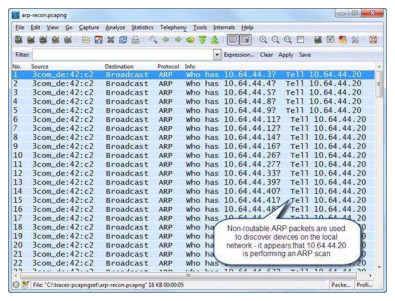
📷Figure 357 — open trace file to view
Figure 357. ARP scans can discover all local TCP/IP devices Detect ICMP Ping Sweeps There are three possible variations of ping sweeps although most people refer to a ping sweep as
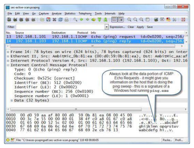
📷Figure 358 — open trace file to view
Figure 358. The most common variation of a ping sweep uses ICMP Echo Requests/Replies
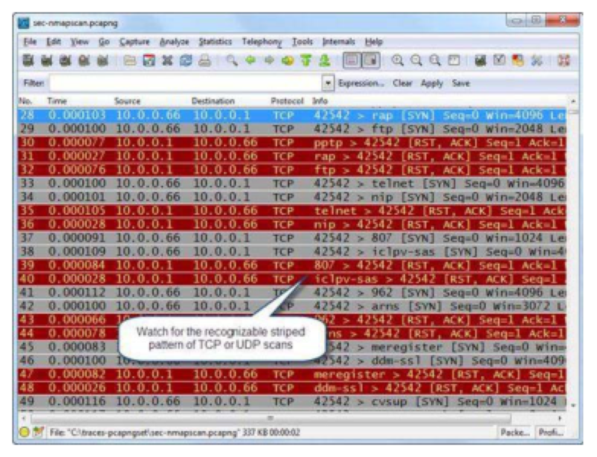
📷Figure 359 — open trace file to view
Figure 359. TCP scans in close proximity are easy to identify TCP Full Connect Scan TCP full connect scans complete the three-way handshake after receiving a SYN/ACK packet from
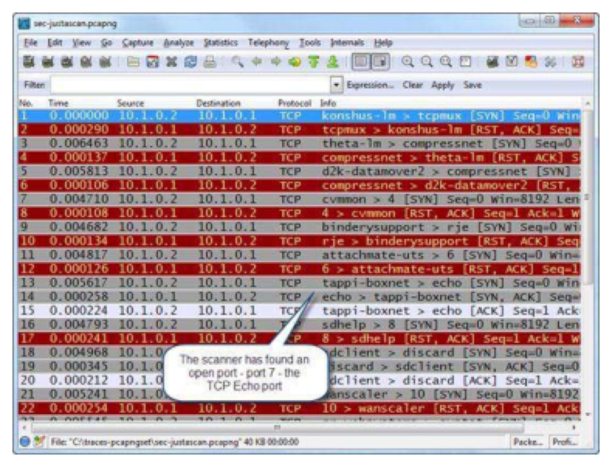
📷Figure 360 — open trace file to view
Figure 360. shows the pattern of a TCP full connect scan. Note that in packet 15, the scanner completes the three-way handshake. Don’t be distracted by the port interpretation of tappi-boxnet. This sim
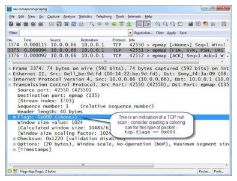
📷Figure 361 — open trace file to view
Figure 361. Null scans do not have any TCP flags set
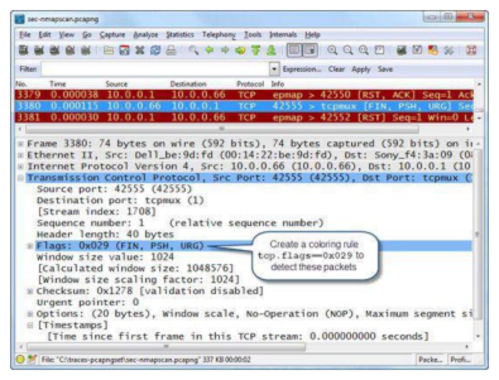
📷Figure 362 — open trace file to view
Figure 362. Xmas scans have the Urgent, Push and Finish flags set FIN Scan FIN Scans only have the TCP FIN bit set.
Figure 367. shows the IP idle scan communications process when the target port is open. These types of scans can be difficult to detect in a trace file—look for TCP Resets that follow TCP SYN packets.
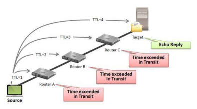
📷Figure 368 — open trace file to view
Figure 368. An ICMP-based traceroute depends on ICMP Time Exceeded in Transit responses
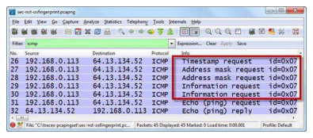
📷Figure 373 — open trace file to view
Figure 373. shows NetScanTools Pro’s OS fingerprinting process and the proximity of these ICMP packets.
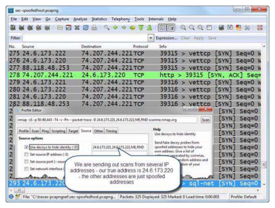
📷Figure 375 — open trace file to view
Figure 375. If the scanner does not complete the three-way handshake, it might be using a spoofed IP address
Ask a Question
Add a Note
💡THINK FIRST · TCP SCAN PATTERNS IN WIRESHARK
In a SYN scan against a target with ports 22 (open), 80 (open), and 443 (closed), what exactly does the Wireshark packet sequence look like for each port?
HINT
For each port: what does the scanner send? What does the target send back? What does the scanner do next?
MODEL ANSWER
Port 22 (open): Scanner → SYN → Target responds SYN/ACK → Scanner immediately sends RST (doesn't complete handshake — marks port as open). Port 80 (open): same pattern. Port 443 (closed): Scanner → SYN → Target responds RST/ACK (port is closed) → Scanner records port as closed, no further action needed. In all cases, the scanner sends to many ports rapidly (many SYNs in quick succession from the same source IP to sequential destination ports on the same target IP).
TCP Scan Patterns in Wireshark
SYN Scan Signature
Scanner → Target: rapid SYN packets to sequential ports, all from the same source port or low source ports
Target → Scanner (open port): SYN/ACK
Scanner → Target (after SYN/ACK): RST (aborts the connection)
Target → Scanner (closed port): RST/ACK
Connect Scan Signature
Scanner → Target: SYN
Target → Scanner (open): SYN/ACK
Scanner → Target: ACK (completes handshake)
Scanner → Target: RST or FIN (closes connection immediately)
Spotting the Scan Pattern
One source IP sending SYNs to many consecutive destination ports on one (or many) target IPs
Rapid pace — hundreds of SYNs per second
Many RST responses from the target (closed ports)
Very short-lived 'connections' (SYN then immediate RST)
Apply Conversations → TCP, sort by Packets — scanner will have many short conversations
🧠
MENTAL NOTE
SYN scan pattern: many SYNs from one IP to sequential ports → SYN/ACK (open) followed by RST from scanner, or RST/ACK (closed). In Conversations, scanner shows many 2-3 packet TCP conversations in rapid succession. Filter: tcp.flags.syn==1 and tcp.flags.ack==0 to see all scan probes.
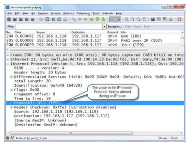
📷Figure 365 — open trace file to view
Figure 365. shows the pattern of an IP protocol scan.
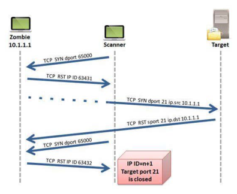
📷Figure 366 — open trace file to view
Figure 366. shows the communication pattern of an IP idle scan when the target port is closed.
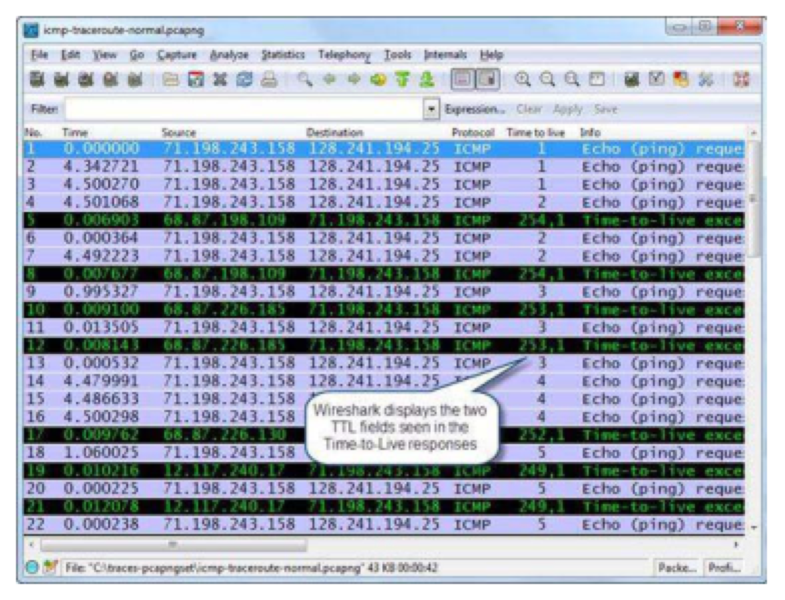
📷Figure 369 — open trace file to view
Figure 369. shows the ICMP Time to Live Exceeded responses to ICMP Echo packets that arrive at the routers with a TTL=1.
Ask a Question
Add a Note
OS Fingerprinting
Passive OS Fingerprinting
TCP/IP stack implementation details vary by OS. From any TCP packet, you can infer the likely OS:
Feature
Windows
Linux
macOS
TTL
128
64
64
TCP Window Size
8192 (older)
5840 or 29200
65535
TCP Options Order
MSS, NOP, WS, TS, SACK
MSS, SACK, TS, NOP, WS
MSS, NOP, WS, TS, SACK
DF Bit
Set
Set
Set
Active OS Fingerprinting (Nmap -O)
Nmap sends a series of specially crafted probes (SYN with specific TCP options, NULL, FIN+SYN+URG, etc.) and analyzes responses against its OS signature database. The characteristic probe patterns are visible in Wireshark and identify the scan as active fingerprinting.
🧠
MENTAL NOTE
OS fingerprinting: TTL (Windows=128, Linux/Mac=64), TCP window size, and TCP options order reveal the OS. Passive fingerprinting: just observe normal traffic. Active fingerprinting (Nmap -O): sends crafted probes — identifiable in Wireshark by unusual flag combinations and probe sequence.
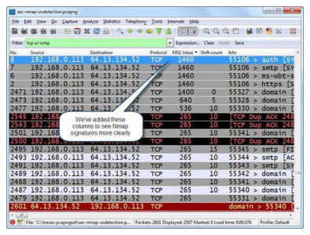
📷Figure 372 — open trace file to view
Figure 372. depicts some of the unique packets in an Nmap OS detection process. In this case we have added two columns—a TCP Maximum Segment Size (MSS) column and a Window Scale Shift Count. We sorted
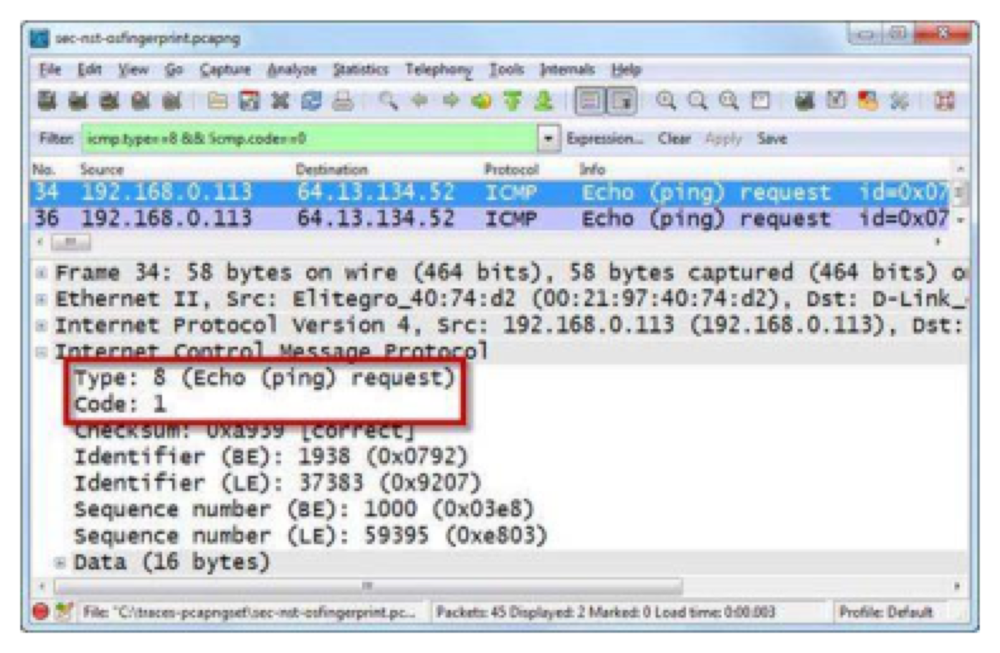
📷Figure 374 — open trace file to view
Figure 374. Unusual ICMP Echo packet formats are also used by some OS fingerprinting tools Identify Spoofed Addresses in Scans Attackers and scanners may use MAC or IP a
Ask a Question
Add a Note
💡THINK FIRST · IDENTIFYING SCANNERS IN WIRESHARK
You see a sudden spike in your IO Graph. How do you quickly determine if it's a port scan vs. a legitimate traffic surge?
HINT
Think about the characteristics of scan traffic vs. normal application traffic: packet size, connection duration, port distribution.
MODEL ANSWER
Port scan signatures: (1) one source IP to many destination ports (SYN scan) or one source IP to many destination IPs on one port (host sweep); (2) very small packets (SYN = ~60 bytes, no payload); (3) no established connections (RSTs or timeouts, not data exchange); (4) rapid sequential port or IP traversal. Normal surge: (1) large packets (data exchange); (2) established connections with sustained data; (3) concentrated on expected ports (80, 443, 8080). Check Conversations → sort by Duration: scan has many 0-second conversations; normal traffic has longer-lived sessions.
Identifying Scanners in Wireshark
Quick Identification Steps
Open Statistics → Conversations → TCP tab. Sort by 'Packets'. A scanner appears as one IP with hundreds of 2-3 packet conversations (each to a different port).
Apply display filter: ip.src == [suspicious IP] and tcp to isolate the scan traffic.
Check the Packet list — if all packets have small sizes (60-70 bytes) with SYN flags and no data payload, it's a SYN scan.
IO Graphs with filter tcp.flags.syn == 1 and tcp.flags.ack == 0 shows SYN-only packet rate — a spike indicates active scanning.
Scanner Tool Identification
Nmap SYN scan: probe ports in a somewhat randomized order, TTL=64 (Linux default), specific TCP options signature
Nmap connect scan: full TCP handshake, then immediate RST, same source port for all probes
Masscan: extremely high-rate SYN scan (millions/sec), source ports from a specific range
CONVERSATION VIEWStatistics → Conversations → TCP, sorted by Packets: a scanner will show hundreds or thousands of conversations, each with exactly 2-3 packets (SYN, then SYN/ACK or RST/ACK). Normal hosts show far fewer, longer-lived conversations.
🧠
MENTAL NOTE
Scanner in Conversations: one source IP → hundreds of 2-3 packet conversations to many ports. Small packet sizes (SYN = ~60 bytes, no data). Filter: tcp.flags.syn==1 and tcp.flags.ack==0 in IO Graphs shows scan rate. Duration of conversations → 0 seconds for scans, seconds-to-hours for normal sessions.
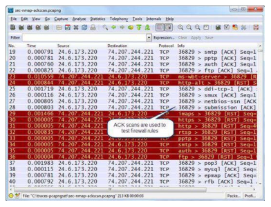
📷Figure 363 — open trace file to view
Figure 363. ACK scans are used to check firewall rules and identify blocked ports Detect UDP Port Scans
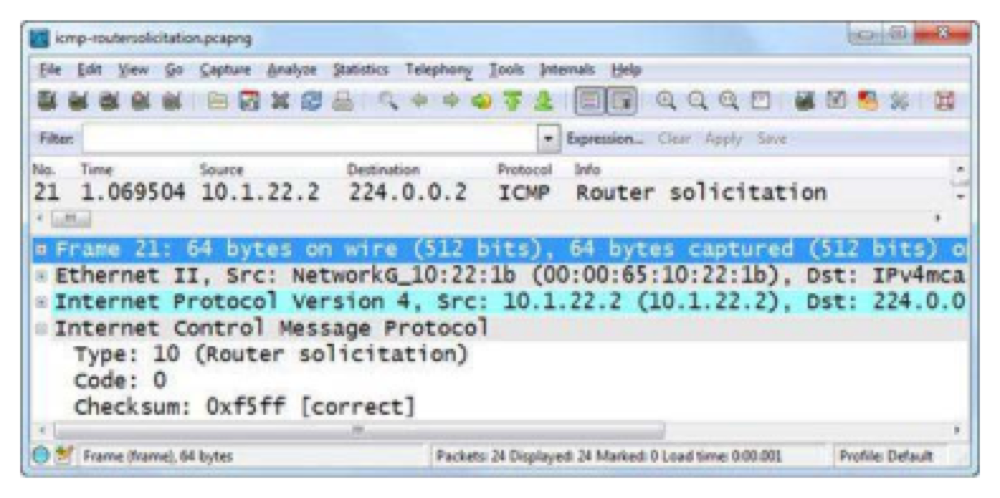
📷Figure 370 — open trace file to view
Figure 370. shows an ICMP Router Solicitation packet. To detect ICMP Router Solicitations and ICMP Router Advertisements, consider using a coloring rule/display filter based on the ICMP Type numbers us
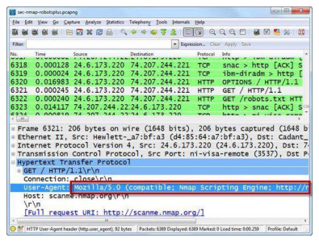
📷Figure 371 — open trace file to view
Figure 371. Nmap's probe is testing port 80 to verify HTTP services—it looks like any other GET request for the root document ("/"), but the UserAgent information identifies the Nmap Scripting Engine
Ask a Question
Add a Note
TL;DR — CHAPTER 31
Port scan types: SYN/half-open (fast, stealthy, needs root), Connect (full handshake, logged), UDP (ICMP unreachable for closed ports), FIN/NULL/XMAS (exploit RFC 793). SYN scan pattern: rapid SYNs to sequential ports → SYN/ACK (open) or RST (closed) → scanner sends RST. OS fingerprinting: TTL (Windows=128, Linux=64), TCP window size, options order. Identify scanners in Conversations: one IP, many 2-3 packet conversations to sequential ports.
Review Questions
Q31.1
What is the TCP packet sequence for a SYN scan against an open port vs. a closed port?
HINT
SYN scan never completes the handshake. What does it do instead?
ANSWER
Open port: Scanner sends SYN → Target responds SYN/ACK (port is open) → Scanner sends RST (aborts, never completes handshake). Scanner records port as open. Closed port: Scanner sends SYN → Target responds RST/ACK (no service listening) → Scanner records port as closed. The key signature: the scanner sends RST after receiving SYN/ACK — normal clients never do this. This allows SYN scans to avoid application-layer logging (no connection was fully established).
Q31.2
How can you determine the OS of a remote host from its TCP SYN packet alone?
HINT
What TCP header fields vary by OS implementation?
ANSWER
Key passive fingerprinting fields in the SYN packet: (1) IP TTL — Windows sets TTL=128, Linux/macOS set TTL=64 (observed TTL may be lower due to hops); (2) TCP window size — varies by OS (Windows: 8192 or 65535, Linux: 5840 or 29200, macOS: 65535); (3) TCP options — the order and set of options (MSS, SACK, Timestamps, Window Scaling) differs by OS and version. No single field is definitive — Nmap uses a combination of these plus response analysis for its -O fingerprinting.
Q31.3
In Wireshark's Conversations window, how does a port scanner's traffic pattern differ from a normal user's?
HINT
Think about number of conversations, duration, and packet counts.
ANSWER
Scanner: appears as one source IP with hundreds or thousands of TCP conversations, each lasting 0 seconds (or near-zero) with 2-3 packets (SYN, SYN/ACK or RST/ACK). All conversations go to sequential or random ports on one or a few target IPs. Normal user: fewer conversations (tens to hundreds), each lasting seconds to minutes, with many packets (data exchange). The scanner's conversations are all extremely short — no data ever flows, just the connection probing.
Q31.4
What display filter shows all SYN-only packets (no ACK) and why is this useful for scan detection?
HINT
What TCP flag combination uniquely identifies an initial SYN?
ANSWER
tcp.flags.syn == 1 and tcp.flags.ack == 0. This matches TCP SYN packets without the ACK flag — these are the initial connection initiation packets. In normal traffic, every host sends a few SYN packets (one per new outbound connection). A scanner sends hundreds or thousands in rapid succession. Applying this filter and checking IO Graphs shows the SYN rate over time — a spike indicates active scanning. The filter excludes SYN/ACK responses and retransmitted SYNs-with-ACK.